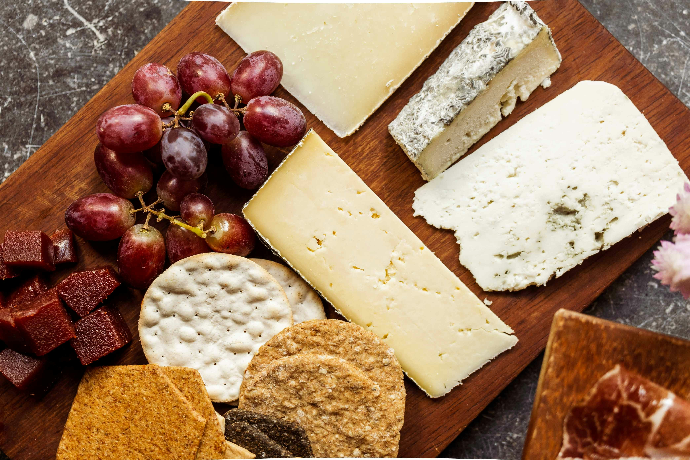

Reconhecimento internacional
Queijarias da região acumulam prêmios dentro e fora do país.

Queijos autorais reconhecidos no Brasil e no mundo, feitos no frio do planalto. Uma tradição que virou prêmio.
O frio do planalto é aliado dos mestres queijeiros. O resultado são queijarias premiadas em concursos nacionais e internacionais — produtos que carregam identidade, técnica e o talento da nossa gente.
Queijarias da região acumulam prêmios dentro e fora do país.
Maturações e receitas exclusivas, nascidas do frio e do talento da nossa gente.
A combinação perfeita: queijos premiados, vinhos da região e cervejas artesanais.
Das queijarias aos empórios e restaurantes da cidade, o queijo está em toda parte.
Presença garantida nos pratos de inverno. Ver gastronomia ›
Acompanhando pães e cucas, o queijo é estrela das tardes frias.
Acompanhe a programação completa e as novidades pelos perfis oficiais do turismo de Guarapuava.